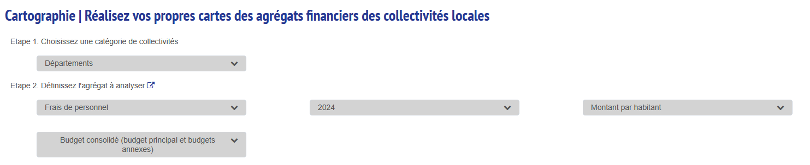
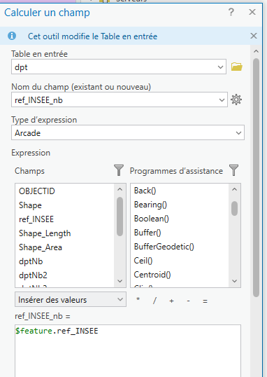
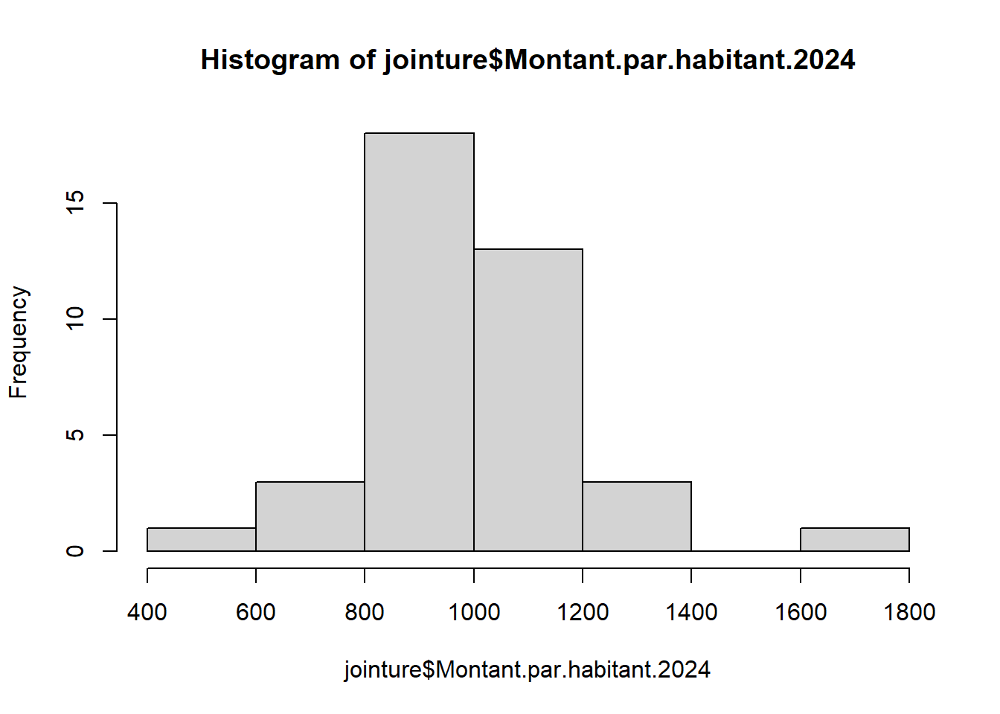
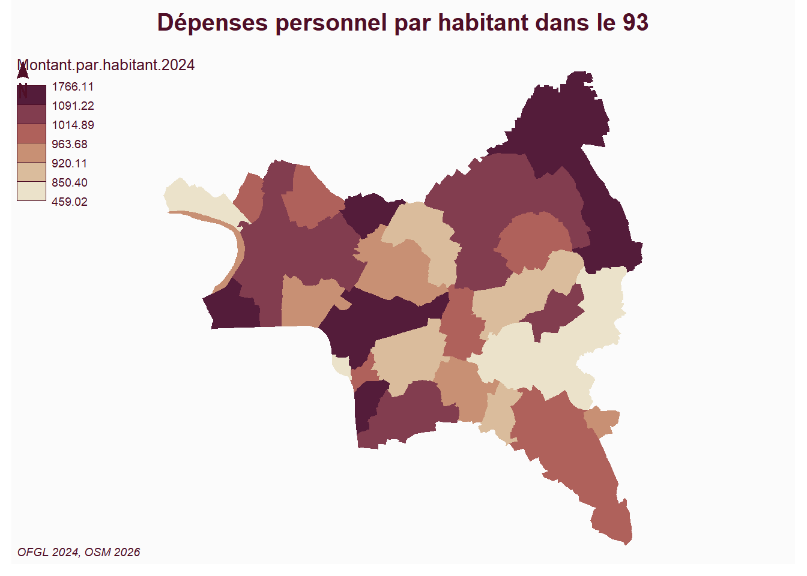
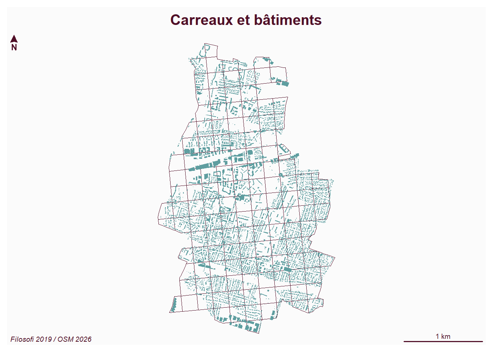
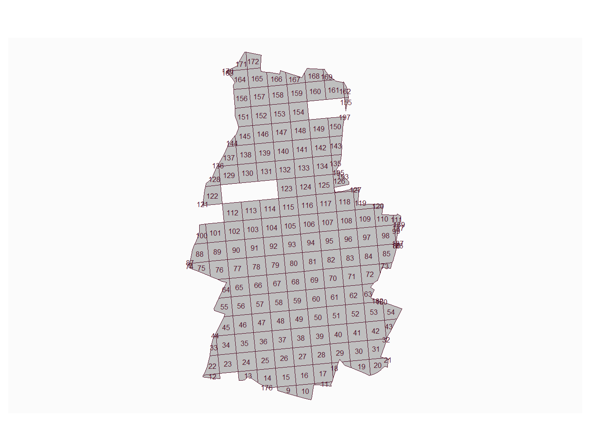
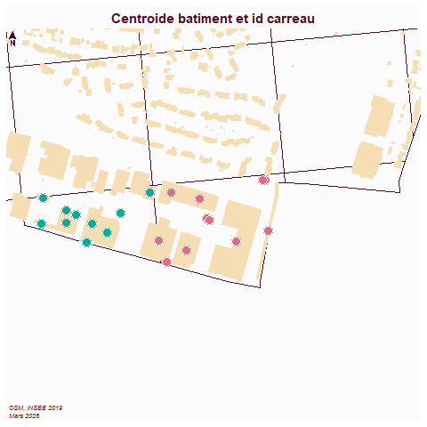
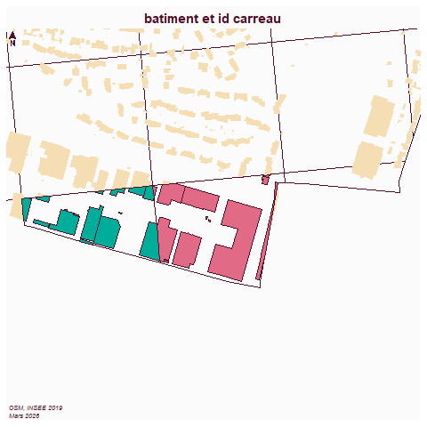

flowchart LR
A[géométrie commune] --> C{joindre}
B[chiffres ofgl] --> C{joindre}
C --> D[carte symbologie graduée]
Jointures
Objet
Les jointures permettent d’enrichir les données en liant plusieurs tables ensemble. Les attributs des 2 tables vont se retrouver dans la jointure.
La jointure attributaire est facile à comprendre. Le point de vigilance est de vérifier :
le nombre d’entités au départ
et après la jointure
La jointure spatiale est plus complexe et coûteuse en terme de calculs, se méfier notamment des croisements polygones / polygones, il vaut mieux passer par les centroides.
Les jointures spatiales reposent sur les relations topologique (inclusion, adjacence et intersection).
Jointure attributaire
Vu la sélection attributaire,
A voir, l’ensemble de définition sur une seule couche.
Repérer la clé
Simplicité de la clé (éviter les noms, privilégier les chiffres)
Cas des noms de rue
Sens de la jointure
Table avec géométrie en premier
Exemple données OFGL et communes du dpt
OSM
Récupération des limites communales dans le dpt dans OSM
requête : admin_level=8 in 93
Code
library(sf)Linking to GEOS 3.13.1, GDAL 3.11.4, PROJ 9.7.0; sf_use_s2() is TRUECode
library(mapsf)
commune <- st_read("data/cours6/communes93.geojson", quiet=T)
# Extraction uniquement des polygones
commune <- st_collection_extract(commune, "POLYGON")OFGL

Code
ofgl <- read.csv2("data/cours6/donnees_carto_communes.csv", dec =".")La clé
Code
commune$ref.INSEE [1] "93055" "93061" "93070" "93001" "93039" "93048" "93006" "93051" "93045"
[10] "93064" "93063" "93053" "93008" "93049" "93033" "93027" "93029" "93013"
[19] "93010" "93072" "93030" "93073" "93007" "93005" "93078" "93077" "93062"
[28] "93057" "93071" "93032" "93050" "93046" "93074" "93015" "93047" "93031"
[37] "93079" "93014" "93066" NA Code
ofgl$Insee [1] 93029 93070 93014 93015 93048 93059 93062 93005 93006 93007 93031 93047
[13] 93008 93010 93045 93050 93071 93027 93033 93053 93063 93064 93013 93030
[25] 93039 93046 93049 93055 93061 93073 93078 93001 93032 93051 93057 93066
[37] 93072 93074 93077 93079Dans Arcgis, la jointure ne passera pas.
Il faut convertir le code insee en chiffre.

La jointure
Code
jointure <- merge(commune, ofgl, by.x = "ref.INSEE", by.y = "Insee")Avec Arcgis, on utilise le menu Jointure et relation du clic droit sur la couche
Code
hist(jointure$Montant.par.habitant.2024)
Code
mf_map(jointure, type = "choro", var = "Montant.par.habitant.2024", border = NA)
#mf_label(jointure, "name" , overlap = F, halo = T)
mf_layout("Dépenses personnel par habitant dans le 93", "OFGL 2024, OSM 2026")
The scale bar does not work on unprojected (long/lat) maps.Sous Arcgis, faire une symbologie couleurs gradués
Jointure spatiale
flowchart LR
A[carreau] --> C{intersecter}
B[bat] --> C{intersecter}
C --> D[bat avec l'identifiant du carreau]
Pas de champs attributaire commun entre les 2 géométries, il faut se servir de la topologie.
Attention aux statistiques issues de ces jointures !
L’idée est de compter le nombre de bâtiments par carreau afin de calculer les données filosofi au bâtiment.
La récupération des bâtiments se fait sur overpass turbo : building=yes in bondy
Code
car <- st_read("data/dataCours1/car.gpkg", quiet = T)
bat <- st_read("data/cours6/bat.geojson", quiet=T)Quelles sont les projections ?
Code
bat <- st_transform(bat, 2154)Affichage des données
Code
mf_map(car [car$id == 93010,], col=NA)
mf_map(bat, col = "cadetblue", border=NA,add = T)
mf_layout("Carreaux et bâtiments", "Filosofi 2019 / OSM 2026")
Les jointures spatiales peuvent être coûteuses en calcul, du coup, souvent, on utilise les centroides.
Il est plus facile pour les logiciels de calculer une intersection centroide / polygone que polygone / polygone.
Points et polygones
Batiments (centroides) et carreau
Code
library(sf)
bat <- st_read("data/cours6/bat.geojson", quiet=T)
bat <- st_transform(bat, 2154)
car <- st_read("data/bondy.gpkg", "carreau", quiet=T)
car <- car [, c("idcar_200m")]
car <- car [!duplicated(car),]
car$id <- seq(1, length(car$idcar_200m))
car <- st_collection_extract(car, "POLYGON")Code
library (mapsf)
mf_map(car)
mf_label(car, "id", cex = 0.5)
Code
# centroides bat
centroid <- st_centroid(bat$geometry)
centroid <- st_transform(centroid, 2154)
car <- st_transform(car, 2154)
# intersection : c'est la relation topologique passe partout
jointure <- st_intersection(car, centroid)Code
head(table(jointure$id))
9 10 11 12 13 14
10 11 2 2 48 64 Code
jointure <- jointure [jointure$id < 3,]Code
png("img/jointureSpatiale1.png")
mf_init(car [1:3,])
mf_map(car, ,col = NA, add = T)
mf_map(bat, col = "wheat", border=NA, add= T)
mf_map(jointure, type="typo", var="id", pch=21, add = T, leg_pos = NA)
mf_layout("Centroide batiment et id carreau", "OSM, INSEE 2019\nMars 2026")
dev.off()
Polygones et polygones
bat et carreaux
Code
jointure2 <- NULL
jointure2 <- st_intersection(car, bat)Code
jointure <- jointure2
jointure <- jointure [jointure$id < 3,]
png("img/jointureSpatiale2.png")
mf_init(car [1:3,])
mf_map(car, ,col = NA, add = T)
mf_map(bat, col = "wheat", border=NA, add= T)
mf_map(jointure [jointure], type="typo", var="id", pch=21, add = T, leg_pos = NA)
mf_layout("batiment et id carreau", "OSM, INSEE 2019\nMars 2026")
dev.off()
Calcul statistique à effectuer
Dans Arcgis Pro, trouver comment calculer le nombre de bâtiments par carreaux (centroides et polygones)